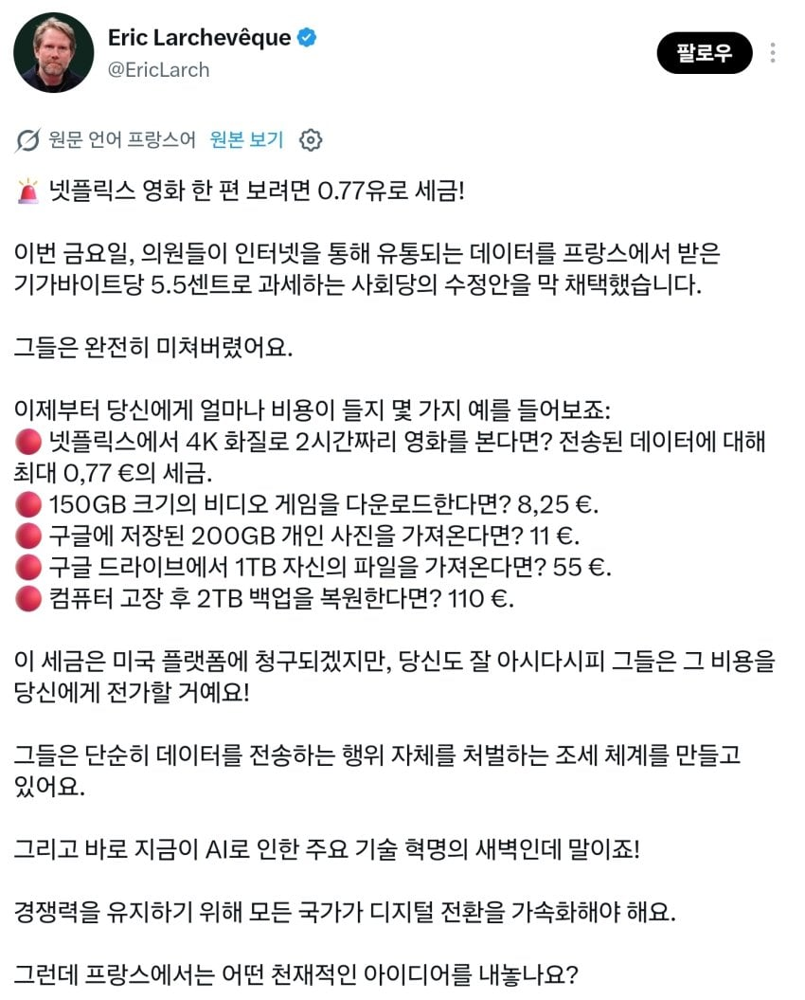
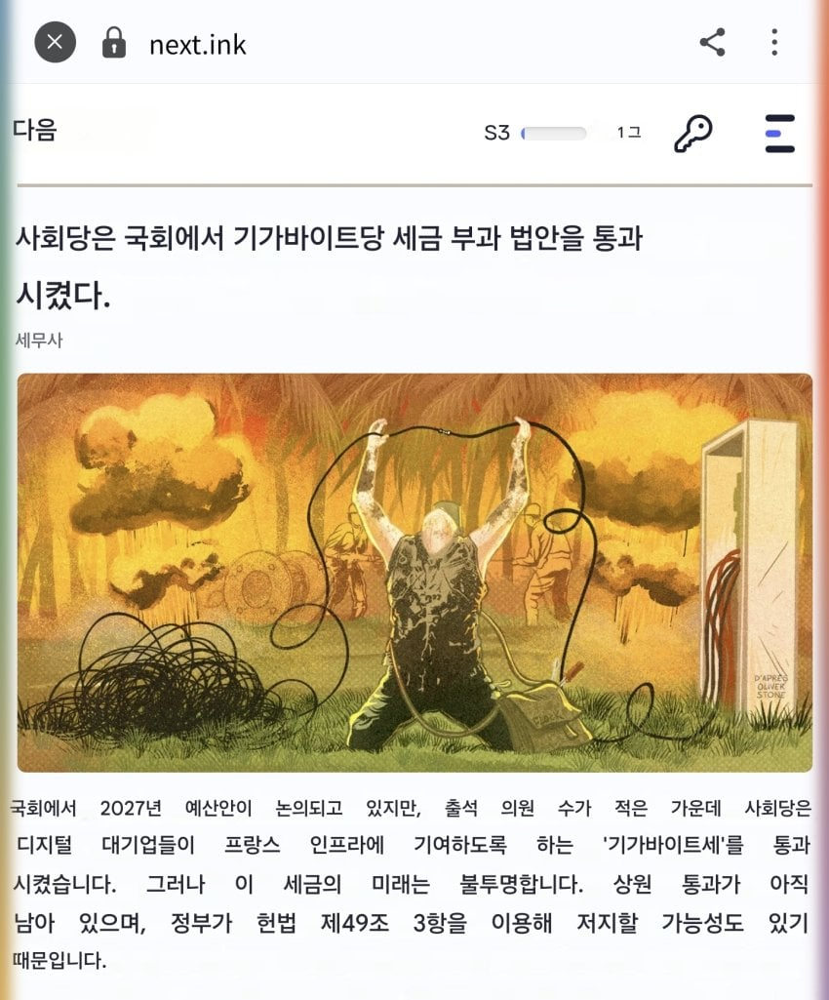
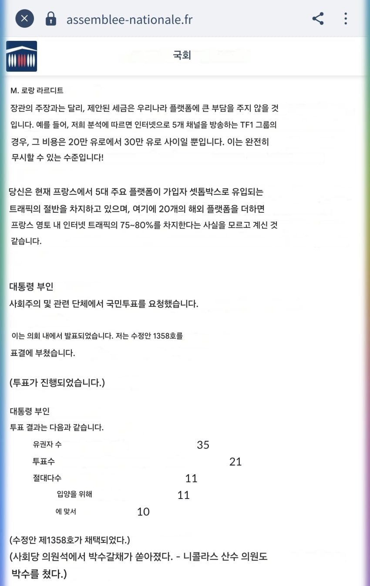

https://gall.dcinside.com/mgallery/board/view/?id=singlebungle1472&no=2683715

프랑스에서 사회당 주도로 데이터법이 하원 통과됨
뭔 법이냐면 콘텐츠 제공업자는 프랑스 국민에게 1GB의 인터넷 데이터를 보낼때마다 5.5센트의 세금을 내야 함(약 1100원)
뭔 말도 안되는 트위터식 근들갑이냐고?


놀랍게도 진짜임
ㅋㅋㅋㅋㅋㅋㅋㅋㅋㅋㅋ
저 법률이 상원까지 통과해서 실행되게 되면 GTA6 다운로드 할때마다 만원이 넘는 세금을 내야 함
망사용료 부활?